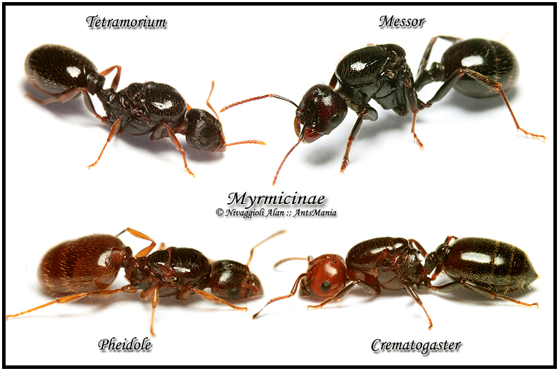

Назад на главную
Myrmicinae Lepeletier, 1836 - мирмицины
Myrmicinae — самое большое подсемейство муравьев, включающее более 2 тыс. видов, относящихся более чем к 150 родам.
Исключительно гетерогенная группа, включающая как генерализованные, так и продвинутые таксоны, обладающие рядом черт высокой морфологической специализации: наличие зубцов и выростов на наличнике, особое строение эпинотума и стебелька брюшка. Большинство видов — многоядные хищники, питаются мелкими беспозвоночными и потребляют падь тлей и других сосущих насекомых. Наряду с этим среди мирмицин встречаются экологически специализированные трофические группы: карпофаги — сборщики семян (Messor, Pogonomyrmex, некоторые Tetramorium и Pheidole), паразиты чужих гнезд (Formicoxenus nitidulus), рабовладельцы, содержащие рабов (муравьи Harpagoxenus sublaevis), муравьи-воры (Diplorhoptrum), муравьи-листорезы (Atta, Acromyrmex, Cyphomyrmex) а так же некоторые опасные виды муравьев (Monomorium, Solenopsis).
Стебелек брюшка 2-члениковый. Лобные валики хорошо выражены и зачастую закрывают усиковые ямки. 2—4 вершинных членика усиков более широкие и образуют хорошо выраженную булаву. Глазки обычно отсутствуют. У некоторых видов резко выражен диморфизм и полиморфизм рабочих, есть каста солдат с очень крупной головой и сильными жвалами. Самки крылатые, значительно крупнее рабочих. Личинки исключительно многообразны по форме, строению ротовых придатков и опушению. Куколки всегда без коконов.